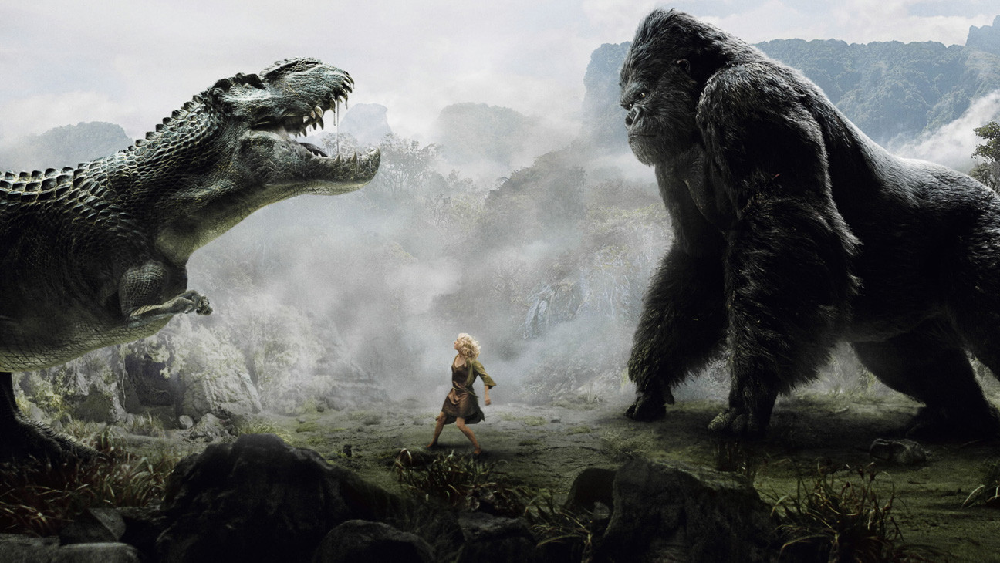

Movie Reviews
Our Overlords have determined that the Movie Theaters are too dangerous for you, but not before I got the chance to see Tenet.
Tropic Thunder
10/10
"I'm the dude, playing a dude disguised as another dude". This movie is tremendous. Not only will it make you roll on the floor laughing, it is genuinely exciting. It's a masterpiece of action comedy with a star cast. You see Stiller, Downey Jr, and Black in this image, but there's also terrific performances from Matthew McConnehey and most of all Tom Cruise. This is easily Tom Cruises best comedic performance and he's somehow the funniest actor in this amazingly funny movie. Also the guy from She's out of my league is funny and the Booty Sweat guy is good too. Also Danny McBride. Can't recommend this movie enough.
King Kong (2005)
10/10
I recently watched King Kong: Skull Island and thought it was not as good as the remake from 2005. I missed Skull Island in theaters because I thought it was too soon for another remake as the 2005 one left a big impact on me. I watched Skull Island finally because I saw the trailer for King Kong Vs. Godzilla, which looks awesome. Skull Island would be like a 6/10 at best. The original King Kong is so much better in every way. I give it a 10 because it's a masterpiece, with a great 3 act structure. Skull island is basically only act 2, but enough about that movie. This Peter Jackson 2005 version is king. The chemistry between a CGI ape and Naomi Watts is really unlike anything I've ever seen. It's such a spectacular movie. Kong takes on multiple T-rex's with a blonde in his hand (and feet) the whole time. In Skull Island, he takes on a few lizard things. It's really stupid. I wish it never happened. Anyway, the 2005 version is heartbreaking, and has excellent characters. I highly recommend rewatching it.
Tenet

7/10
This is one of the most difficult movies to review. I enjoyed watching it in theaters. Too much of it doesn't make sense. Why does The Protagonist go so far out of his way to save the bad guy's wife if he is dealing with a platonium level threat as a secret agent? There is not enough of character development to justify his strange decisions to basically risk the fate of world on saving the bad guy's wife. That doesn't even scratch the surface on difficultly understanding this film. The bad guy is getting help from the future to destroy the past. Why? I've seen it 3 times and I still don't know why. Also, the whole going inverted and then driving a car and it explodes so you get hypothermia thing? No thanks. However, this movie does certain things very well like a breathtaking action packed opening scene along with the smooth way The Protagonist wins fist fights. The inversion thing is cool initially, it's only very frustrating on the rewatch when you're hoping to truly understand this movie. It has it's moments, and is very ambitious. I was going to give it a 4/10 because it's closer to a disaster than a masterpiece but I had so much fun watching it the first time that I have to give it a 7.